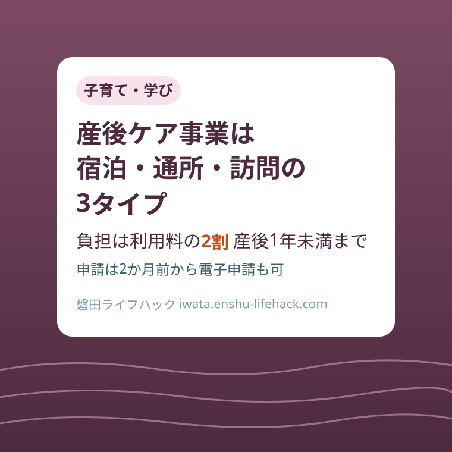

更新：2026.11.20 子育て・学び
磐田市の産後ケア事業｜宿泊・通所・訪問の3タイプ、利用料の2割負担で産後1年未満まで

この記事の要点
Q. 磐田市の産後ケア事業は、誰が、どのように使えますか？
A. 磐田市の産後ケアは、対象条件を満たす産後1年未満の方などが利用でき、流産・死産等を経験された方も対象です。自己負担は原則2割で施設別に異なり、宿泊1泊2日は2日分です。電子申請は利用希望日（出産予定日）の2か月前から1週間前まで。対象条件と料金は市の最新案内で確認してください。
導入——「産後は休めない」を、市の仕組みで少しだけ変える
出産直後の数週間は、授乳とおむつ替えが昼夜を問わず続き、まとまった睡眠が取れません。実家が遠い、パートナーの仕事が忙しい、上の子の世話もある。そんなときに頼れる公的な仕組みが、磐田市の産後ケア事業です。
先に結論を書きます。磐田市の産後ケアは、対象条件を満たす産後1年未満の方などが利用でき、流産・死産等を経験された方も対象です。自己負担は原則2割で施設別に異なり、宿泊1泊2日は2日分です。電子申請は利用希望日（出産予定日）の2か月前から1週間前まで。対象条件と料金は市の最新案内で確認してください。
この記事では、2026年11月19日に磐田市公式の案内資料で確認した範囲に絞って、対象、3タイプの中身、費用の考え方、申し込みの段取り、そして里帰り先で受けた場合の払い戻しまでを整理します。料金の細部は年度や施設で変わるため、最後は市の最新案内で確かめる前提で読んでください。
まず、公式資料から事実を整理する
市の現行案内では、磐田市に住民票がある出産後1年未満のお母さんとお子さんで、医療行為が必要ない方が対象です。インフルエンザなどの感染症にかかっている場合（疑いを含む）は利用できません。個別の利用条件は市や施設に確認してください。
流産・死産等を経験された方も利用できます。お子さんと一緒の利用だけを対象とする制度と受け取らず、希望する支援を市へ相談してください。
ケアの中身は、産婦の母体管理と生活・栄養面の指導、乳房管理とケア、心理的なケア、授乳や育児の具体的な指導と助言、乳児の発育・発達に関する相談と助言です。「休む場所の提供」だけではなく、助産師などの専門職から体の回復と育児の両方を支えてもらう事業だと分かります。
タイプは3つあります。宿泊型は母子が施設に宿泊してケアを受ける形で、1泊2日以上を基本とし、必要な回数の食事が提供されます。通所型（1日）は6時間程度の利用が基本で1食以上の食事つき、通所型（半日）は3時間以内で食事の提供はありません。訪問型は助産師などが自宅を訪問する形で、3時間以内、食事の提供はありません。

市の公表資料（令和6年1月時点の報告）では、契約施設は宿泊型7施設・通所型6施設・訪問型6施設とされ、利用の限度は宿泊型が通算7日まで、通所型と訪問型はあわせて4回までと案内されています。施設数や限度は変わることがあるため、申し込み時に最新の施設一覧を確認してください。
「体調が悪い人だけの制度」と誤解されがちですが、案内が掲げる目的は、出産後に心身の不調や育児不安のあるお母さんが安心して子育てできるようにすることです。眠れない、授乳がうまくいかない、気持ちが沈む。そうした状態は「我慢するもの」ではなく、この事業の想定内です。
費用の仕組み——利用料の2割負担が基本
自己負担は利用料金の2割で、金額は施設と利用形態により異なります。市の施設・利用料金表（R8.4）では、宿泊型の日額例は磐田市立総合病院6,600円、聖隷浜松病院7,000円です。1泊2日は2日分なので、各例は13,200円、14,000円です。これは全施設の料金範囲を示すものではありません。利用前に市の最新料金表と利用施設で確認してください。
私は、日額だけで安いと判断せず、必要な日数の総額と追加費用を確認することが大切だと考えます。宿泊型は1泊2日で2日分になるため、家族の予定と費用の両方を並べて検討してください。
利用時間、食事の提供回数、月齢などの条件は施設ごとに異なります。自己負担に含まれるものと別途費用、希望日の空き状況を利用施設へ確認してください。非課税世帯・生活保護世帯は無料、多胎児は2人目以降の料金が無料と市が案内しています。
なお、産後ケア事業の利用料は消費税法上、非課税扱いとされています。領収書の金額に違和感があるときは、この点も含めて窓口に聞くと話が早くなります。
申し込みの段取り——電子申請は利用希望日（出産予定日）の2か月前から1週間前まで
利用には事前申請が必要です。電子申請の受付期間は利用希望日（出産予定日）の2か月前から1週間前までです。期限後の扱いや希望施設の利用を自己判断せず、市へ確認してください。
電子申請が難しい場合は、こども若者家庭センターの窓口（総合健康福祉会館 iプラザ2階、磐田市国府台57-7、電話0538-37-2012）でも申請できます。審査には時間がかかるため、早めの申請が案内されています。
流れは、申請、審査、市からの「産後ケア事業利用承認決定通知書」の受け取り、施設への予約と利用、という順番です。承認決定通知書は利用当日に施設へ提示する書類なので、受け取ったら母子健康手帳と一緒に保管しておくと安心です。

出産後に「つらくなってから申請する」のでは、審査の待ち時間がそのまま負担になります。妊娠中、体調が落ち着いている時期に、対象かどうかと申請方法だけでも窓口に確認しておくことを勧めます。申請そのものは出産後でも、段取りを知っているかどうかで産後の動きは大きく変わります。
里帰り先で受けても、払い戻しの道がある
見落とされやすいのが、里帰り出産のケースです。市の案内では、磐田市に住民票があるお母さんと赤ちゃんが、里帰り先などで市の契約施設以外の施設で産後ケアを受けた場合でも、事前に利用申請をして承認決定通知書を受け取っていれば、自費で支払った費用の一部を払い戻せるとされています。
助成額は利用料の8割が基本で、市民税非課税世帯や生活保護受給世帯、多胎児加算については全額助成の扱いがあります。ただし助成額には区分ごとの上限があり、おむつ代やキャンセル料など利用料以外の料金は対象外です。
払い戻しの申請は、利用日から1年以内に、こども若者家庭センターの窓口で行います。利用施設で記入してもらう「産後ケア事業実施報告書」と領収書などが必要になるため、里帰り先の施設には、利用前に「磐田市の払い戻しの手続きがある」ことを伝えておくのが確実です。振り込みまでは2か月程度かかると案内されています。
ここで一番大事なのは順番です。払い戻しは「受けてから申請」ではなく、「受ける前に申請して承認を得ておく」ことが条件です。里帰りの予定がある家庭は、出発前に必ず窓口へ相談してください。
磐田の暮らしに置き換える——どのタイプを選ぶか
タイプ選びの目安を、暮らしの場面で考えます。とにかく眠りたい、体を休めたいというときは宿泊型です。食事つきで夜間の授乳も含めて任せられる時間を作れます。
授乳のやり方や赤ちゃんのお世話を、実際に見てもらいながら覚えたいときは通所型が向きます。1日型なら6時間程度、半日型なら3時間以内と、上の子の保育園のお迎えに合わせて選びやすいのも通所型です。
外出そのものが負担な時期は訪問型です。自宅の環境のままで、授乳姿勢や沐浴の手順を自宅の設備に合わせて指導してもらえます。3タイプは排他ではなく、限度回数の範囲で組み合わせる相談もできます。
窓口への電話では、「産後何週か」「一番困っていること」「希望するタイプと時期」の3点を先に伝えると、施設の空き状況と合わせて具体的な提案を受けやすくなります。
評価——良い点と、注文したい点
良い点は、宿泊・通所・訪問から希望を検討でき、事前の電子申請と里帰り先等での払い戻しの案内があることです。私は、2割負担という割合だけで判断せず、施設別の金額と申請期限を一緒に見せる案内が必要だと考えます。
注文したい点もあります。料金の目安や施設数が分かる公表資料が、市の報告資料や実施機関向けの案内に散らばっていて、市民向けの1枚にまとまった最新の料金表へたどり着くのに手間がかかることです。産後ケアは「必要なときにすぐ調べる」情報です。対象、タイプ別の自己負担額、施設一覧、申請リンクが1ページに揃うと、利用のハードルはさらに下がります。
もう一つ、制度の存在自体を知らないまま産後1年を過ぎてしまう家庭があり得る点も気になります。母子健康手帳の交付時や新生児訪問の場で、この事業の案内が確実に手渡される運用になっているかは、利用者側からも声を届けたいところです。
対案・結論——「つらくなったら」ではなく「予定に入れておく」
結論です。磐田市の産後ケア事業は、市の対象条件を満たす産後1年未満の方などを対象に、流産・死産等を経験された方も利用でき、宿泊・通所・訪問の3タイプを、利用料の2割負担（市の公表資料ベース）で使える仕組みです。限度は宿泊型が通算7日、通所型と訪問型はあわせて4回までと案内されています。
対案として提案したい使い方は、「限界が来たら使う予備」ではなく「出産前から予定表に入れておく休息」として扱うことです。審査に時間がかかる制度だからこそ、妊娠中の確認と早めの申請が、そのまま産後の余裕になります。
里帰り出産の家庭は、払い戻しの条件が「事前申請と承認」であることを忘れないでください。順番を守れば、里帰り先の施設でも8割助成の対象になります。
確認する順番
まず、市に住民票があること、医療行為の要否や感染症などの対象条件を確認します。流産・死産等を経験された方も利用できるため、個別の状況を窓口へ伝えて相談してください。
自己負担は利用料金の2割で、金額は施設と利用形態により異なります。市の施設・利用料金表（R8.4）では、宿泊型の日額例は磐田市立総合病院6,600円、聖隷浜松病院7,000円です。1泊2日は2日分なので、各例は13,200円、14,000円です。これは全施設の料金範囲を示すものではありません。利用前に市の最新料金表と利用施設で確認してください。
そして、電子申請は利用希望日（出産予定日）の2か月前から1週間前までに行います。電子申請が難しい場合は、 iプラザ2階の窓口（電話0538-37-2012）で申請します。承認決定通知書が届いたら施設を予約し、当日は通知書と母子健康手帳を持参します。
里帰り先で使う場合は、この順番に「出発前の窓口相談」と「利用後の1年以内の払い戻し申請」が加わります。
家族で共有するための記録
産後ケアの利用は、お母さん本人が産後に一人で段取りするのが一番難しい手続きです。妊娠中に、この記事の要点をパートナーや家族と共有しておくことを勧めます。
共有しておく項目は、窓口の電話番号（0538-37-2012）、電子申請の受付期間は利用希望日（出産予定日）の2か月前から1週間前までであること、承認決定通知書が必要なこと、希望するタイプと時期の希望、の4点です。メモ1枚で十分です。
産後の判断力は、睡眠不足で確実に落ちます。「調べる・申し込む・予約する」を誰が担うかを先に決めておくこと自体が、産後ケアの一部だと思ってください。
大石の視点
産後ケアは、子育て支援の中でも「知っているかどうか」で利用が大きく分かれる制度です。2割負担という条件の良さに比べて、料金表や施設一覧へのたどり着きにくさが、もったいないと感じます。
磐田市は、こども医療費を高校生年代まで無料にし、ファミリー・サポート・センターや家事支援ヘルパー派遣など、子育て期の支えを積み重ねてきたまちです。産後ケア事業もその一角にあります。制度の棚が揃っているからこそ、あとは「必要な人に、必要な時期に届くか」です。
出産は予定日通りに進むとは限らず、産後の状態も人それぞれです。だからこそ、使わなかったらそれでよい「保険」として、妊娠中に申請方法だけは確認しておいてほしいと思います。
まとめ
自己負担は利用料金の2割で、金額は施設と利用形態により異なります。市の施設・利用料金表（R8.4）では、宿泊型の日額例は磐田市立総合病院6,600円、聖隷浜松病院7,000円です。1泊2日は2日分なので、各例は13,200円、14,000円です。これは全施設の料金範囲を示すものではありません。利用前に市の最新料金表と利用施設で確認してください。
電子申請は利用希望日（出産予定日）の2か月前から1週間前までに申請でき、窓口は iプラザ2階のこども若者家庭センター（電話0538-37-2012）です。里帰り先の契約外施設でも、事前申請と承認等の条件を満たす場合、利用料の8割を基本に、市が定める上限内で一部の払い戻しを受けられます。最新情報は市の公式案内で確認のうえ、妊娠中の早めの相談をお勧めします。
この記事で扱った範囲
- 対象は市に住民票がある産後1年未満の方など。医療行為が不要で感染症等の条件があります。流産・死産等を経験された方も利用できます（対象条件部分を2026年11月20日に現行市公式で確認）
- タイプは宿泊型（1泊2日以上が基本・食事つき）／通所型1日（6時間程度・1食以上）／通所型半日（3時間以内）／訪問型（3時間以内）。ケア内容は母体管理、乳房ケア、心理的ケア、授乳・育児指導、発育発達相談
- 自己負担は利用料金の2割で、金額は施設と利用形態により異なります。市の施設・利用料金表（R8.4）では、宿泊型の日額例は磐田市立総合病院6,600円、聖隷浜松病院7,000円です。1泊2日は2日分なので、各例は13,200円、14,000円です。これは全施設の料金範囲を示すものではありません。利用前に市の最新料金表と利用施設で確認してください。 宿泊型は7日まで、通所型と訪問型はあわせて4回までです。
- 申請は電子申請（利用希望日（出産予定日）の2か月前から1週間前まで）またはこども若者家庭センター窓口（iプラザ2階、電話0538-37-2012）。里帰り先等の契約外施設は事前申請と承認を条件に利用料の8割を払い戻し（上限あり、申請は利用日から1年以内）
参考にした公式情報
- 磐田市産後ケア事業の実施について（実施機関向け案内）／磐田市こども若者家庭センター（掲載当時の実施機関向け参考資料。利用者向けの現行条件は冒頭の市公式案内を優先）
- 「産後ケア事業」の拡充により利用者が増加／磐田市（市の公表資料）（旧記事制作時の参考資料。現行料金・対象・申請期間は冒頭の市民向け案内と料金表を優先）
最終確認日：2026-11-19 ／ 本記事は公表情報と執筆者の見解を分けて記載しています。制度・数値・公開状況は変更される場合があるため、最新情報は磐田市公式ページでご確認ください。